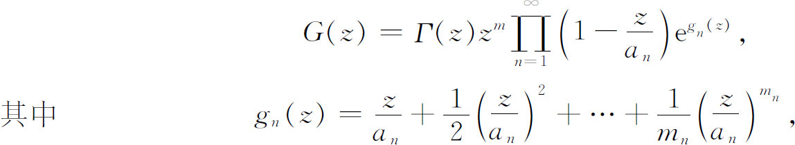
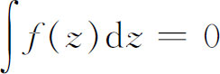

11．函数的表示与例外值
19世纪后期，复函数的理论迅速发展，我们将有机会在以后几章中考虑这些发展的某些部分。可是，在许多创造中，有少数几个原来就与复函数本身直接关联着的却要在这里先提一下。
在单值复函数中，相当重要的一种是整函数（就是在平面的有穷部分没有奇点的函数，它包括多项式，ez，sin z，cos z），因为粗略地说，它们是初等实函数的类似物。对于这种函数，刘维尔定理说，每一个有界的整函数是一个常数(46)。魏尔斯特拉斯把实多项式分解为线性因式的定理推广到了整函数，他建立这个定理(47)大概是在19世纪40年代。这定理称为因式分解定理，是这样说的：如果G（z）是一个整函数，不恒等于零，但有无穷多个根（即不是一个多项式），那么G（z）可以写成一个无穷乘积

Γ（z）是一个没有零点的整函数，an是G（z）的零点，zm表示在z＝0的m重零点［如果G（z）有这样一个零点的话］，乘积的各因式称为G（z）的质因式。
复杂性仅次于整函数的是亚纯函数，它在复平面的有穷部分只能有极点。魏尔斯特拉斯在1876年(48)的论文中证明，一个亚纯函数可以表示为两个整函数的商。这个定理由米塔-列夫勒（Gösta Mittag-Leffler，1846—1927）在1877年的一篇论文中加以推广(49)。在任意一个区域上的亚纯函数可以表示为两个函数的商，其中每一个都在该区域内解析。在魏尔斯特拉斯定理和米塔-列夫勒定理中，分子和分母都不在区域的同一点上为零。
另外一个引起许多数学家注意的论题是各种类型的复函数能够取值的范围。在这方面，皮卡［（Charles）Emile Picard，1856—1941］得到一系列结果。他是巴黎大学的高等分析的教授，也是巴黎科学院的永久书记。皮卡在1897年(50)证明，对一个整函数而言，如果它不退化为一常数的话，最多只能有一个有穷值它达不到；并且如果存在至少两个这样的值，其中每一个只被取有穷次，那么这个函数就是一个多项式。否则，除去这例外的一个以外，这个函数要无穷次地取到每一个值。如果这个函数是亚纯的，则无穷是一个可取的值，最多有两个值可以不取，而不使函数退化为一常数。
在同一篇论文中，他发展了索霍斯基（Julian W．Sochozki，1842—1927）和魏尔斯特拉斯的一个结果，证明了在一个孤立本性奇点的任何邻域内，一个函数要取到所有的值，最多可能有一个（有穷）值例外。这个结果是深刻的，并且有许多推论。确实，其他一些结果和可供选择的证明产生了，它们把这个论题很好地带入了20世纪。
在复函数这门学科中，19世纪结尾时回到了基础方面。19世纪柯西积分定理的证明用到df/dz为连续的事实。古尔萨（Edouard Goursat，1858—1936）证明了(51)沿着一条闭曲线C的柯西定理，

，而没有假定在曲线C所围成的闭区域内导数f′（z）连续。f′（z）的存在已是充分的。古尔萨指出，f（z）的连续与导数的存在已足够刻画解析性。像我们概述复函数理论的兴起时所指出的，柯西、黎曼和魏尔斯特拉斯是函数论的三个主要奠基人。在一段长时间内他们各自的思想和方法被他们的追随者各自继续研究着。后来柯西和黎曼的思想被融合起来了，而魏尔斯特拉斯的思想逐渐从柯西-黎曼观点推导出来，因而不再强调从幂级数出发的思想。而且柯西-黎曼观点的严密性被改进了，以至从这个观点看来魏尔斯特拉斯的探讨途径不是本质的。完全的统一只是在20世纪开头时才实现。
参考书目
Abel，N．H．：Œuvres complètes，2 vols．，1881，Johnson Reprint Corp．，1964．
Abel，N．H．：Mémorial publié à l'occasion du centénaire de sa naissance，Jacob Dybwad，Kristiania，1902．
Brill，A．，and M．Noether：“Die Entwicklung der Theorie der algebraischen Functionen in älterer und neuerer Zeit，”Jahres．der Deut．Math．-Verein．，3，1892/1893，109-556，155-186 in particular．
Brun，Viggo：“Niels Henrik Abel．Neue biographische Funde，”Jour．für Math．，193，1954，239-249．
Cauchy，A．L．：Œuvres complètes，26 vols．，Gauthier-Villars，1882-1938，relevant papers．Crowe，Michael J．：A History of Vector Analysis，University of Notre Dame Press，1967，Chap．1．
Enneper，A．：Elliptische Funktionen：Theorie und Geschichte，2nd ed．，L．Nebert，1890．
Hadamard，Jacques：Notice sur les travaux scientifiques de M．Jacques Hadamard，Gauthier-Villars，1901．
Jacobi，C．G．J．：Gesammelte Werke，7 vols．and Supplement，G．Reimer，1881-1891；Chelsea reprint，1968．
Jourdain，Philip E．B．：“The Theory of Functions with Cauchy and Gauss，”Bibliotecha Mathematica，（3），6，1905，190-207．
Klein，Felix：Vorlesungen über die Entwicklung der Mathematik im 19．Jahrhundert，2 vols．，Chelsea （reprint），1950．
Lévy，Paul，et al．：“La Vie et l'œuvre de J．Hadamard，”L'Enseignement Mathématique，（2），13，1967，1-72．
Markuschewitsch，A．I．：Skizzen zur Geschichte der analytischen Funktionen，V E B Deutscher Verlag der Wissenschaften，1955．
Mittag-Leffler，G．：“An Introduction to the Theory of Elliptic Functions，”Annals of Math．，24，1922/1923，271-351．
Mittag-Leffler，G．：“Die ersten 40 Jahre des Lebens von Weierstrass，”Acta Math．，39，1923，1-57．
Ore，O．：Niels Henrik Abel，Mathematician Extraordinary，University of Minnesota Press，1957．
Osgood，W．F．：“Allgemeine Theorie der analytischen Funktionen，”Encyk．der Math．Wiss．，B．G．Teubner，1901-1921，Ⅱ B1，1-114．
Reichardt，Hans，ed．：Gauss：Lebenund Werk，Haude und Spenersche Verlags-buchhandlung，1960；B．G．Teubner，1957，151-182．
Riemann，Bernhard：Gesammelte mathematische Werke，2nd ed．，Dover （reprint），1953．
Schlesinger，L．：“Über Gauss'Arbeiten zu Funktionenlehre，”Nachrichten König．Ges．der Wiss．zu Gött．，1912，Beiheft，1-143；also in Gauss's Werke，102，77 ff．
Smith，David Eugene：A Source Book in Mathematics，2 vols．，Dover （reprint），1959，pp．55-66，404-410．
Staeckel，Paul：“Integration durch imaginäres Gebiet，”Bibliotecha Mathematica，（3），1，1900，109-128．
Valson，C．A．：La Vie et les travaux du baron Cauchy，2 vols．，Gauthier-Villars，1868．
Weierstrass，Karl：Mathematische Werke，7 vols．，Mayer und Müller，1895-1924．
————————————————————
(1) Nova Acta Acad．Sci．Petrop．，7，1789，99-133，pub．1793＝Opera，（1），19，1-44；ibid．，10，1792，3-19，pub．1797＝Opera，（1），19，268-286．
(2) 一批论阿尔冈以及其他作者的关于复数几何表示的思想的文章，可以在热尔岗的Annales des Mathématiques的第四卷（1813—1814）和第五卷（1814—1815）中找到。
(3) Werke，8，90-92．
(4) Comm，Soc．Gott．，3，1832＝Werke，2，95-148；这篇论文的主要内容将在第34章第2节中讨论。
(5) Werke，2，169-178．
(6) Werke，2，174 ff．
(7) Werke，2，p．102．
(8) Werke，8，90-92．
(9) Jour．de l'Ecole Poly．，11，1820，295-341 ．
(10) Mém．des sav．étrangers，（2），1，1827，599-799＝Œuvres，（1），1，319-506．
(11) Novi Comm．Acad．Sci．Petrop．，14，1769，72-103，pub．1770＝Opera，（1），17，289-315．
(12) Œuvres，（1），1，330．
(13) Œuvres，（1），1，338．
(14) Œuvres，（2），3，154．
(15) ＝Œuvres（2），4，13-256．
(16) Bull．des Sci．Math．，7，1874，265-304，与8，1875，43-55，148-159；这篇论文未收入柯西的论文集。
(17) Four vols．，1826-1830＝Œuvres，（2），6-9．
(18) Vol．1，1826，23-37＝Œuvres，（2），6，23-37．
(19) Exercices d'analyse et de physique mathématique，Vol．2，1841，48-112＝Œuvres，（2），12，48-112．
(20) Comp．Rend．，4．，1837，216-218＝Œuvres，（1），4，38-42；亦见Exercices d'analyse et de physique mathématique，Vol．2，1841，48-112＝Œuvres，（2），12，48-112．
(21) Comp．Rend．，23，1846，251-255＝Œuvres，（1），10，70-74．
(22) “Sur les intégrales dans lesquelles la fonction sous le signe ∫ change brusquement de valeur，”Comp．Rend．，23，1846，537与557-569＝Œuvres，（1），10，133-134与135-143．
(23) “Considérations nouvelles sur les intégrales définics qui s'étendent à tous les points d'une courbe fermée，”Comp．Rend．，23，1846，689-702＝Œuvres，（1），10，153-168．
(24) Comp．Rend．，17，1843，348-349；文章全文发表在Jour．de l'Ecole Poly．，23，1863，75-204。
(25) Werke，1，51-66．
(26) Jour．de Math．，15，1850，365-480．
(27) Comp．Rend．，32，1851，68-75与162-164＝Œuvres，（1），11，292-300与304-305．
(28) Œuvres，（1），11 ．
(29) Mém．des．sav．étrangers，7，1841，176-264＝Œuvres，145-211 ．
(30) Astron．Nach．，6，1827，33-38＝Werke，1，31-36．
(31) Jour．für Math．，2，1827，101-181，与3，1828，160-190＝Œuvres．263-388．
(32) Werke，1，49-239．
(33) Fundamenta Nova，1829．
(34) Jour．für Math．，13，1835，55-78＝Werke，2，23-50．
(35) Comp．Rend．，19，1844，1261-1263与32，1851，450-452．
(36) Sitzungsber．Akad．Wiss．zu Berlin，1882，443-451＝Werke，2，245-255；亦见Werke，5．
(37) Jour．für Math．，9，1832，394-403＝Werke，2，7-16，与Jour．für Math．，13，1835，55-78＝Werke，2，25-50与516-521 ．
(38) Jour．für Math．，4，212-215＝Œuvres，515-517．
(39) Werke，3-43．
(40) Vol．54，1857，115-155＝Werke，88-144．
(41) Werke，2，49-54．
(42) 狄利克雷问题和狄利克雷原理的后来历史，见第28章第4节和第8节。
(43) Jour．für Math．，64，1864，372-376．
(44) Jour．für Math．，70，1869，105-120＝Ges．Abh．，2，65-83．
(45) Annali di Mat．，（2），1，1867，95-103，和（2），4，1871，1-9＝Ges．Abh．，2，56 ff．
(46) 这个定理是属于柯西的［Comp．Rend．，19，1844，1377-1381＝Œuvres，（1），8，378-385］，博哈特（Carl Wilhelm Borchardt）在刘维尔1847年的演讲中听到了这个定理，因而把它归于刘维尔。
(47) Abh．König．Akad．der Wiss．，Berlin，1876，11-60＝Werke，2，77-124．
(48) Abh．König．Akad．der Wiss．，Berlin，1876，11-60＝Werke，2，77-124．
(49) Öfversigt af Kongliga Vetenskops-Akademiens Förhandlingar，34，1877，＃1，17-43；亦见Acta Math．，4，1884，1-79．
(50) Ann．de l'Ecole Norm．Sup．，（2），9，1880，145-166．
(51) Amer．Math．Soc．，Trans．，1，1900，14-16．